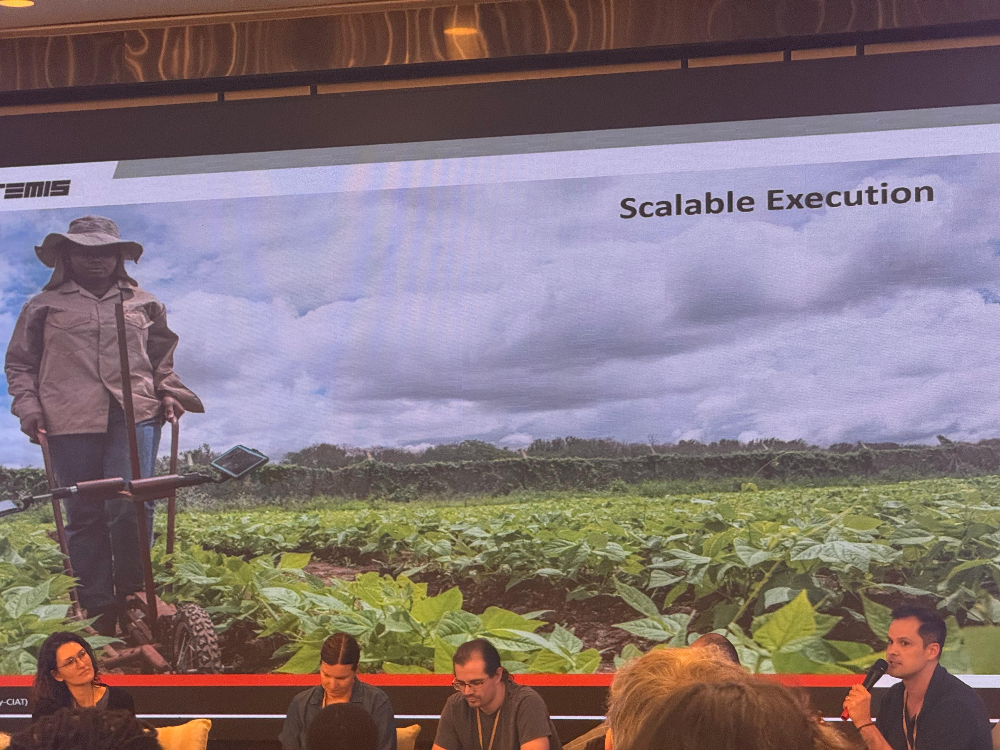
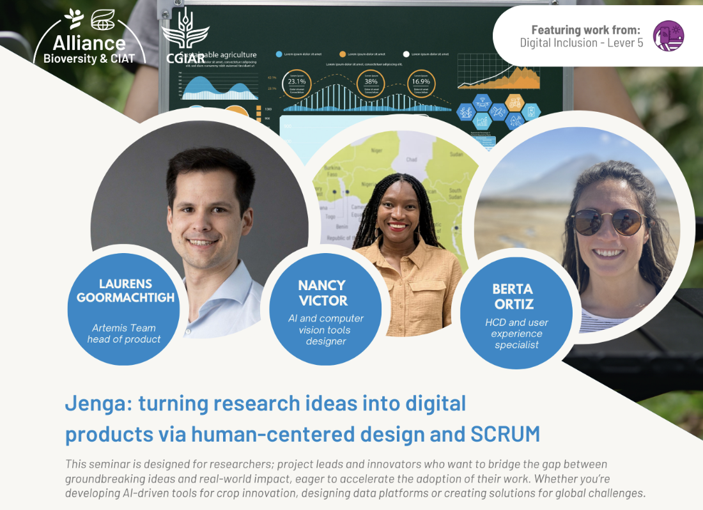

Led the design and deployment of AI-enabled digital phenotyping platforms supporting crop breeding programmes across Tanzania, Kenya, and Uganda.
Built and scaled a mobile and web-based system integrating field data collection, machine learning pipelines, and breeder-facing insights — reducing turnaround time from weeks to under 24 hours.
Context
Crop breeding programmes in the Global South often rely on manual phenotyping processes that are labor-intensive, slow, and difficult to standardize. This limits the ability to generate timely insights and scale data-driven decision-making.
Within the Alliance of Bioversity International and CIAT, there was a need to transition from fragmented research tools toward integrated digital platforms that could support breeding programmes across multiple countries. ONA, part of the ARTEMIS program, is the flagship expression of that direction; learn more at ona.farm.

My role
As Head of Product, I was responsible for establishing the product function, defining platform strategy, and leading the development of AI-enabled digital tools for agricultural innovation.
This included building cross-functional teams, aligning software development with machine learning pipelines, and working closely with breeders, scientists, and institutional stakeholders.
What we built
We developed ONA, an AI-Powered Digital Phenotyping Platform for Crop Improvement in Africa, that enables breeding teams to collect standardized field data and automatically extract plant traits using computer vision.
The system integrates:
- Mobile data collection — offline-first, built for field conditions
- AI-based trait extraction pipelines
- Web dashboards for breeders and analysts
- Interoperability with existing breeding systems (e.g. BrAPI-compatible tools)

Key challenges
Challenge 1: Fragmented system & slow ML pipeline
Data collection and trait extraction were poorly integrated, leading to delays of several weeks before breeders could access results.
Challenge 2: No product foundation
At project start, there was no product strategy, no development team, and no structured delivery process.
Challenge 3: Cross-team misalignment
Machine learning engineers, software developers, and field teams operated in silos, slowing progress and limiting scalability.
Actions
I led the transition from fragmented efforts to a coordinated product-driven approach by:
- Defining product vision, strategy, and roadmap for the platform
- Hiring and building a cross-functional engineering team (mobile, backend, ML integration)
- Introducing structured product development processes (Agile rituals, PRDs, prioritization frameworks)
- Establishing regular coordination between product, MLOps, and data teams
- Mapping the end-to-end user journey to identify bottlenecks in the data-to-insight pipeline
- Leading field deployments and training sessions with breeding teams (including partners such as ICRISAT)
Results
- Reduced trait extraction turnaround time from weeks to under 24 hours
- Successfully deployed the platform across Tanzania, Kenya, and Uganda
- Enabled standardized, scalable data collection workflows for breeding teams
- Established a high-performing cross-functional product team
- Increased adoption and usability of AI tools in real-world breeding programmes
Leadership and initiative
During Alliance Science Week (Vientiane, 2025), I was asked last minute to present the work of the Artemis team. I took initiative to deliver multiple presentations covering ONA, Sikia, and broader digital innovation efforts.
This increased visibility of the work across the organization and positioned the platform within broader digital transformation discussions.
